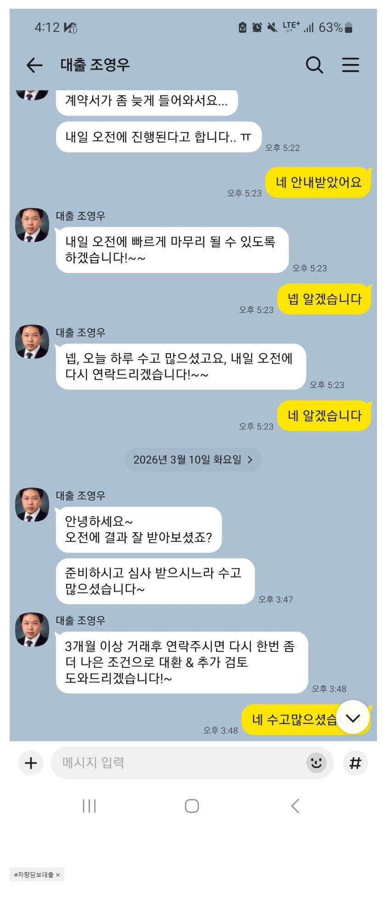

[차량담보대출 ] 신용회복중 1700만원 차량담보대출 승인 후기
- 이직후 3개월째 차량담보대출로 1200만원 받았습니다 신용회복중이라서 여러군데 알아봐주시고 빠르게 한도받았습니다. 차량할부로 사려다가 할부가 안나와서 현금으로구매하고 차량담보대출로 목돈보유목적으로 받았는데 빠르게 처리되서 좋네요
[조건]
신용회복 진행 중 / 직장인 / 4대가입 / 3개월차 / 월급여 250만 /
보유차량 2023년식 국산차 보유
나이스 700점
[대출]
한도 2000만원 중 1200만 승인 받음

https://cafe.naver.com/cityman88/310373